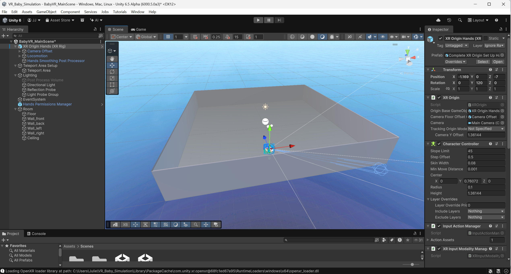

VR · Unity XR Toolkit · 2026
VR Parenting Simulator
A cutting-edge VR parenting prototype. Built with Unity XR and tested with Oculus Quest 2, featuring realistic hand tracking, haptic feedback, and AI-driven performance analytics. Achieved 95% gesture-recognition accuracy.